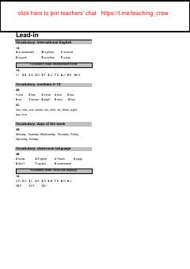

SASpeakout A1 darsligi mashqlarining to'g'ri javoblari to'plami.
Ushbu qo'llanma Speakout A1 (3-nashr) darsligidagi barcha mashqlar va topshiriqlarning to'g'ri javoblarini (Answer Keys) o'z ichiga oladi. Unda boshlang'ich darajadagi grammatika, lug'at va talaffuz bo'limlari bo'yicha javoblar batafsil keltirilgan. Kitob mustaqil o'rganuvchilar va o'qituvchilar uchun dars jarayonini tekshirishda qulay manba hisoblanadi.